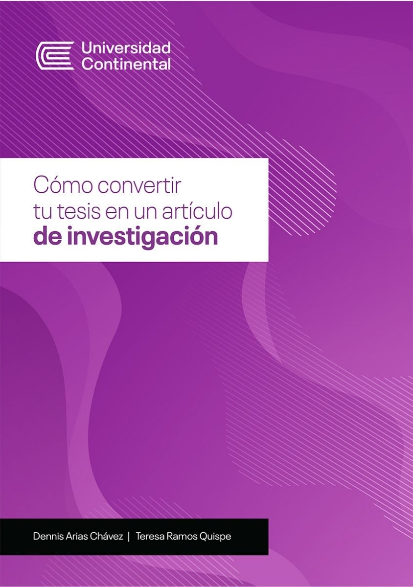
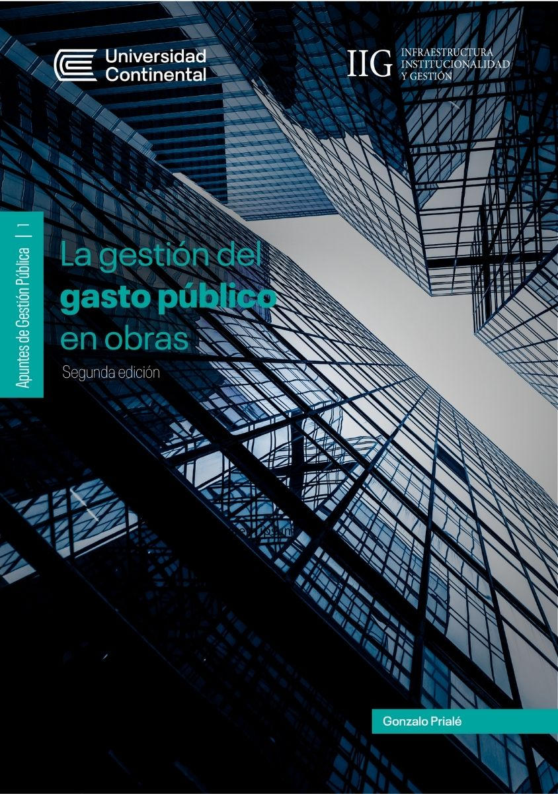
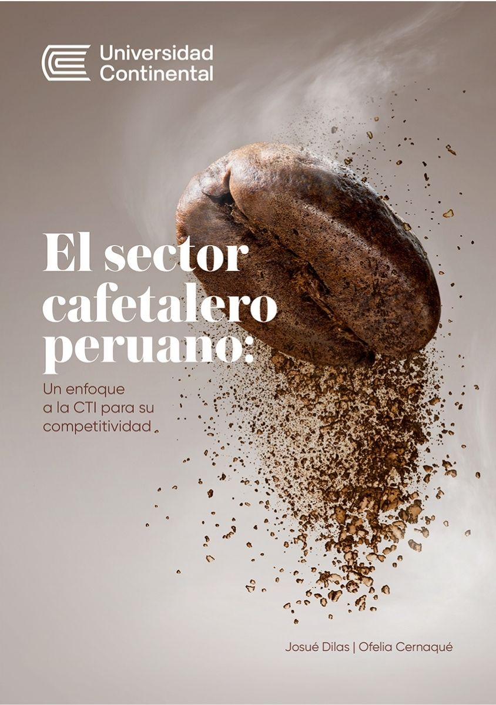
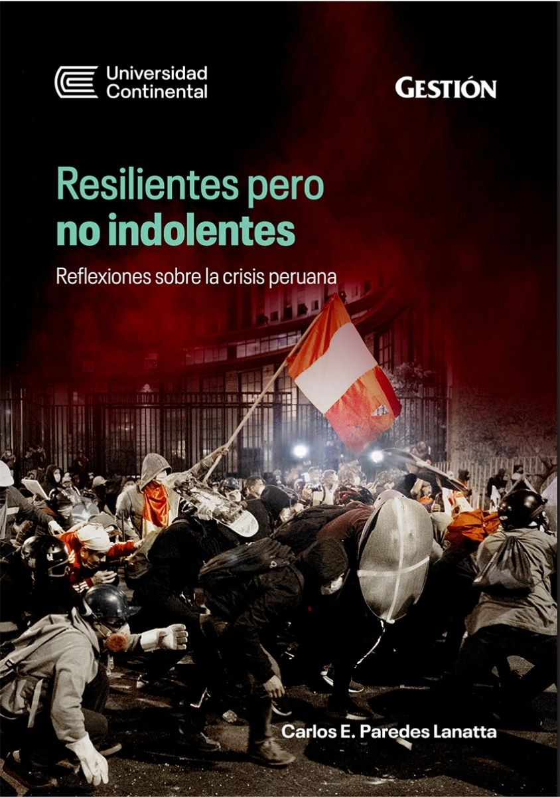
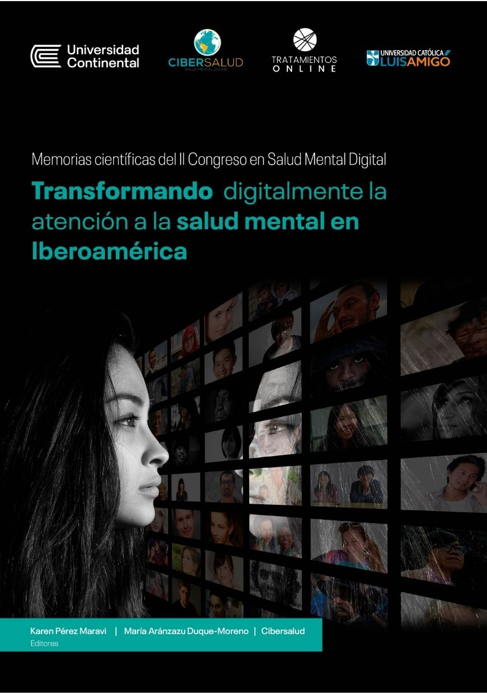

Nuestras publicaciones
Encuentra libros académicos de las diferentes facultades, carreras y especialidades de la Corporación Educativa.

Cómo convertir tu tesis en un artículo de investigación
Dennis Arias Chávez

La gestión del gasto público en obras
Gerardo Távara

El sector cafetalero peruano: un enfoque a la CTI para su competitividad
Claudia Sarmiento

Resilientes pero no indolentes: Reflexiones sobre la crisis peruana
Carlos E. Paredes Lanatta

Memorias científicas del II Congreso en Salud Mental Digital
Karen Pérez Maraví
Sobre nosotros
Somos el área encargada de visibilizar la producción intelectual generada desde sus actividades académicas de docencia, investigación y servicio.
Acceso abierto
Descarga de manera gratuita nuestras publicaciones de acceso abierto consideradas en esta sección.
Repositorio
Accede a nuestra producción académica y científica en distintos formatos generados por nuestra comunidad educativa.